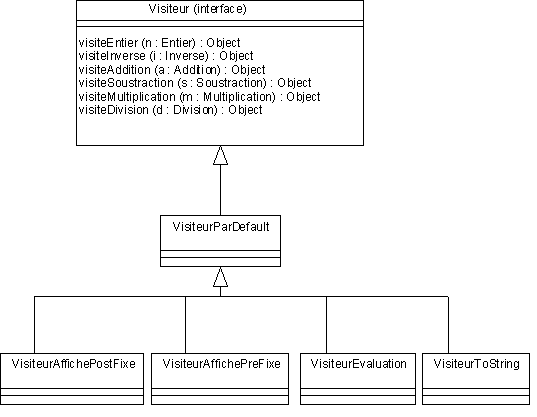

| Exercice n° 4 :
En conclusion de l'exercice précédent, on a vu que pour ajouter une nouvelle méthode aux expressions il faut ouvrir tous les fichiers de l'application. Ces fichiers sont déjà au nombre de 10. Cette manipulation peut être source d'erreurs. L'idée est alors de n'avoir à créer qu'une classe pour l'ajout d'une méthode. Cette nouvelle classe est appelée 'visiteurXX'. Elle contient les différentes implantations spécialisées pour toutes les classes de l'application. La classes de l'application ont accès à ces méthodes par une seule et unique méthode 'accept(Visiteur v)' donc
D'où l'idée de se servir du pattern visiteur de
* Design Patterns -- Catalogue de modèles de conception
reutilisables

La classe 'VisiteurParDefaut' est une classe concrête
qui implante l'interface 'visiteur' et qui correspond à
l'action 'Ne-Rien-Faire'. Quelles conclusions ? Si on ajoute une classe d'objet on retrouve la complexité précédente (au niveau des visiteurs toutefois...)
Question 2 : Ajouter
deux opérateurs unaires dans les expressions, le Successeur (classe
Suc) et le prédécesseur (classe Pre) Quelles conclusions ?
Question 3:
Ajouter un visiteur de simplification (VisiteurSimplification)
des expressions qui remplace 'e+1' par e$ et 'e-1' par
e£ Quelles conclusions ?
/* une idée... |